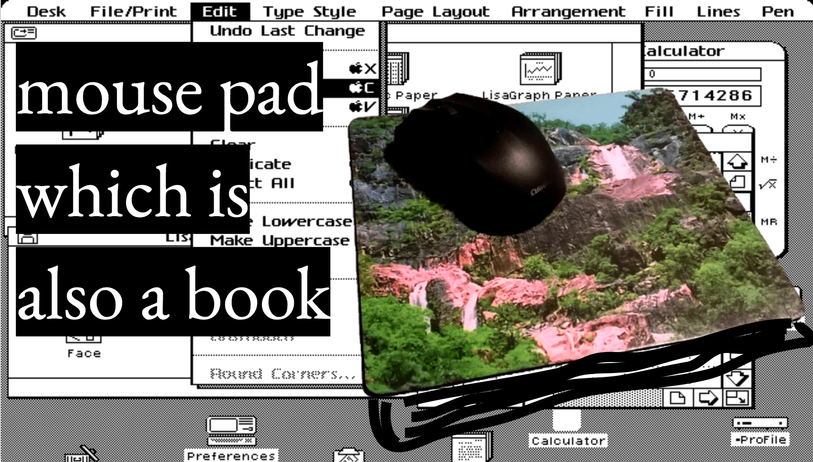
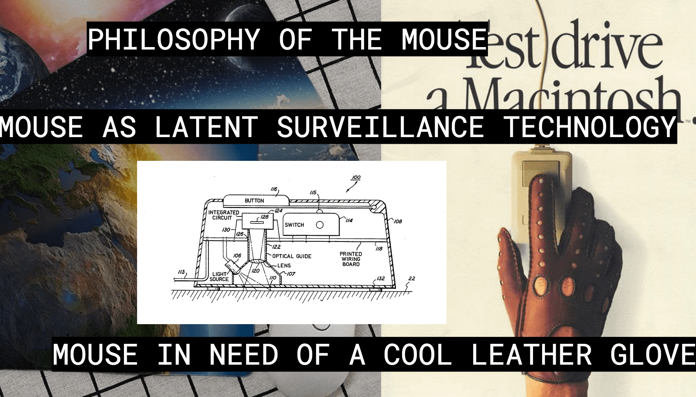
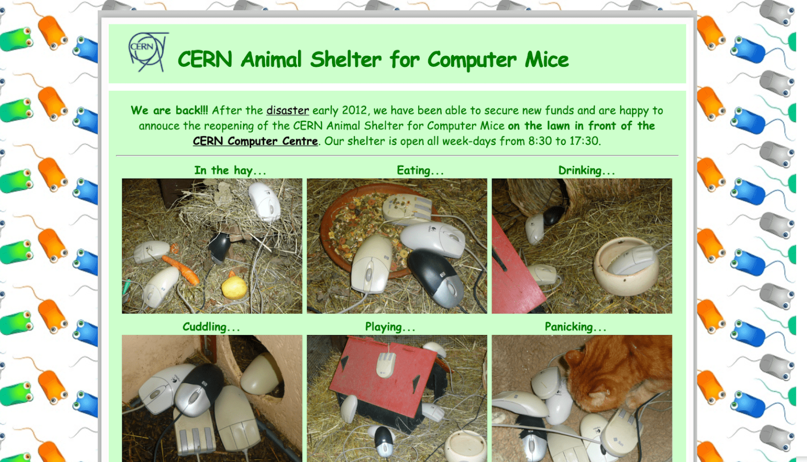
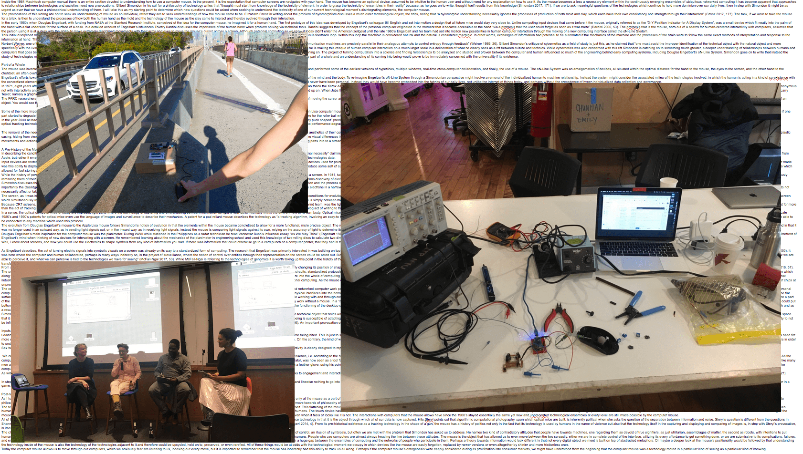
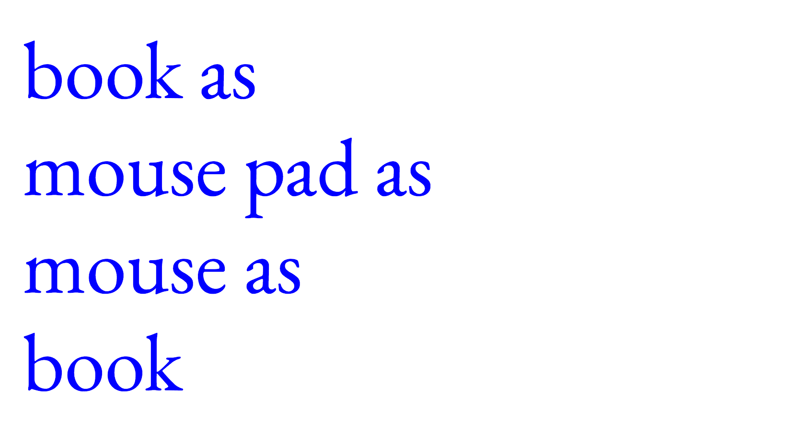
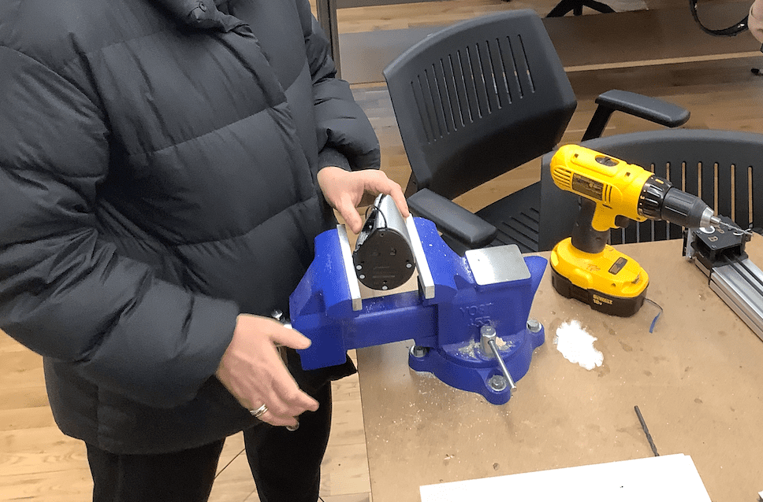
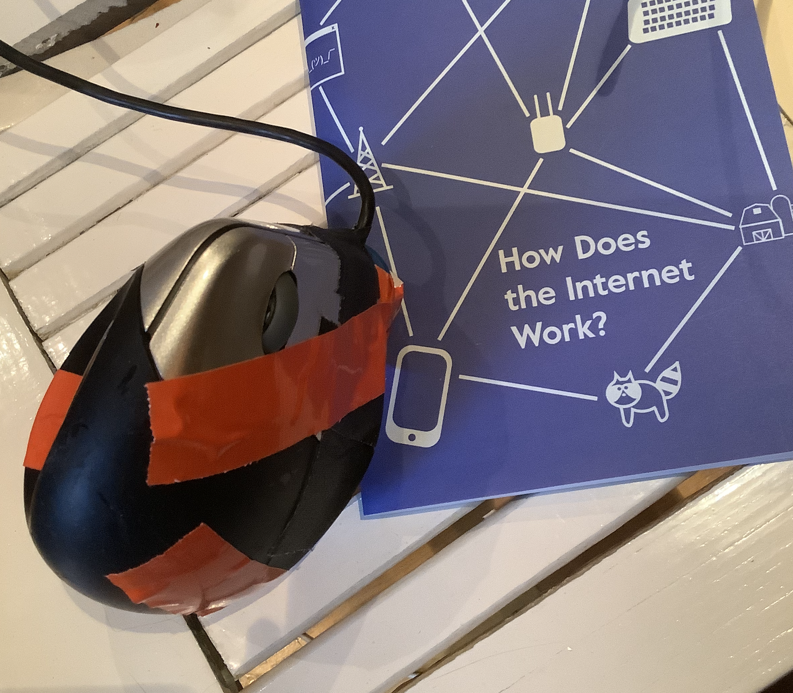
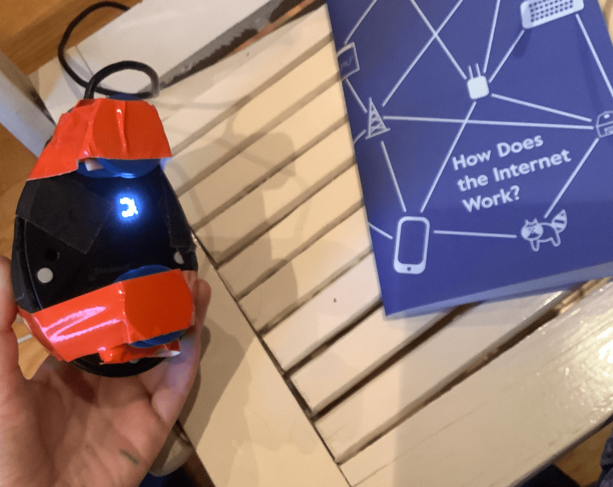
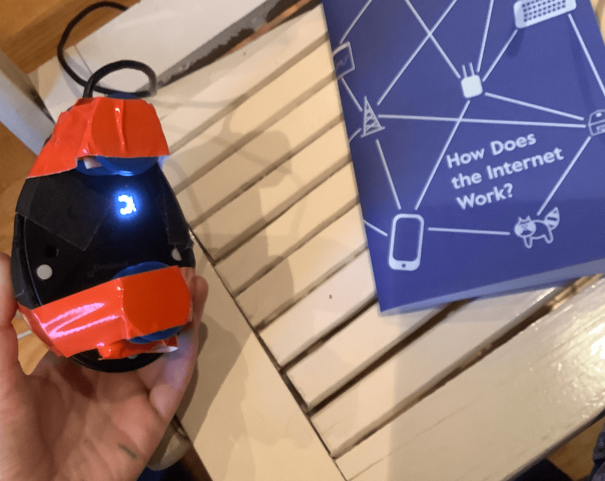

 My proposal for thesis is to make a book. For now, the book is nothing more than a structure, a place to hold everything I and my collaborators have made.
The only formal decisions that I have made is that the book should double in function as a mouse pad and that it will be printed on a risograph. It might also triple in function as a mouse. My intention is to bring attention to the mouse, to implode its history into a book which can simultaneously support its function.
Relevant research and writing I did last semester which might inform the structure of the book. In step with philosopher Gilbert Simondon if the computer mouse were to be taken on its own terms, it would quickly find itself as a necessary part of a whole and an understanding of its coming into being would prove to be immediately concerned with the universality if its existence. To have a philosophy of the computer mouse is to move towards of philosophy of technological objects from their elements all the way up to their ensembles.
The optical computer mice of today could be considered imploded light pens where the technology of capturing and differentiating between information as light is now done internally within the environment of its own body. And if we are to understand light as historically intertwined with violence how has the evolution of the computer mouse proliferated this violence? Is the mouse perhaps a kind of latent surveillance technology?  The mouse is serially underappreciated, but I would argue that it cannot be penetrated with intelligibility because its intelligence is already there, only hidden from view. As the computer and the mouse became more dependent on each other, the place that women had in the ensembles of computing shifted. The computer, no longer a glorified typewriter or a glorified calculator, was now seen as a tool for those with pre-existing social power. As a part of the multi-million dollar advertising campaign launched in 1984 Apple released an advertisement which displayed an image of a man’s hand, in a leather glove, using his pointer finger to press the single button. The caption reads “Test drive a Macintosh”. Already, the mouse is being defined as masculine, akin to a motorcycle, in need of a cool leather glove.
Perhaps if the computer mouse’s ontogenesis were deeply considered during its proliferation into consumer markets, we might have understood from the beginning that the computer mouse was a technology rooted in a particular kind of seeing as a particular kind of knowing.
 This is a project that I will continue to work on upon graduating from ITP and my priority is not to finish a book but to gesture towards the finishing of a book. I hope to take this book with me into academic spaces which will support continued and dedicated research on this subject. At the moment this will look like a PhD or a research fellowship. This book will be the thing I hope to lean on in garnering support from future insitutions.
 Nearly everything I have done on the mouse has taken the form of writing. I have also produced a conference and have made small projects which attempt to repurpose old mice. For now there is a not a lot to show but this semester will have me writing one more paper through a technofeminist lens and i hope to format all of the writing and images i have collected into a format that is compelling. This might also include an index of “mouse projects”.
 The biggest challenges at the moment are making formal decisions. I want to make sure that whatever the technical element of the book is works. In other words, I want to decide on a technical element as soon as possible so that I can build it into the structure of the book early and depend on it working throughout the process of laying out and printing the book.
until february 29th
test print on risograph, confirm prototype for book, test spiral binding, test usb extension cable, make outline for book contents
until march 10th
book contents in terms of layout and content should be near complete, the only thing left to do in terms of book design should be related to how to attach usb extended, color of spiral, how to attach mousepad, the only thing left to do in terms of content should be editing individual writings, endoscopic camera inside mouse should be working, order final paper for riso printing
until march 24th
first pass at 8 minute video performance should be complete,
until april 21st
risograph printing!! make at least 10 copies!!
until april 7th
performace should be well tested, additional props should be decided and working by now, book contents should be fully edited and ready for print
until end
post-printing edits, lecture practice
below are images of the first prototype
the book includes a series of test prints on the risograph, spiral binding, a used mouse pad, and a usb extended for plugging a computer mouse into


after having made formal decisions for the book i have decided (after advice from sarah) to focus on the presentation aspect of my thesis.
while i am still commited to producing the book from here on out i will be looking at the book as a prop to support my presentation. i have ideas around using the book as a mouse pad to open images for my presentation, then switching to the book itself and using a mouse as a magnifying glass to highlight some of the things i am talking about, then switching back to a regular mouse and so on. the idea here is to use mouse related props while talking about a philosophy of the mouse. drawings below!


prop #1: mouse pad book

prop #2: a camera hidden inside of a vertical mouse. i will use this to mouse over my book during the lecture, turning the pages of the book into a screen
Idit helped me open the vertical mouse.

Given the size of this mouse and the size of the endoscopic camera I am using I had to prop the mouse up about two inches from the surface of the paper. This is why there's a lot of tape...
Using the zine "How does the Internet Work" as proof of concept since my book is under construction!
 

Here is a screen recording from the mouse moving over the book...
after watching several itp presentations i found the most effective ones to be less slides with more talking, less explanation of product and stronger visuals of process.
for my presentation i would like to lean on these things which i found to be most effective. i would like to plan on using a closesly curated and considered list of visuals and movements which are tied into what i am talking about. in a recent conversation with ashley marina and luming we talked about figuring out the language of the mouse and using this as the basis for how i present information with the mouse.
here is a screenshot of my screen, this is what i'm going for in my presentation:

talking points for mid-term:
My provocation for this presentation is that if the computer mouse's coming together, its coming into being, were understood as it proliferated into consumer markets we might have understoof that the mouse was rooted in particular kind of seeing as a particular kind of knowing.
It is these particular kinds of seeings and these particular kinds of knowings that I'm interested in. I am committed to unpacking them, looking backward into order for look forward. I see this project as an important step towards slower and more caring relationships with technological objects computational or social.
By my final presentation in May this gesture of a presentation will be a fully scripted and choreogrpahed performance lecture. I'll perform it at Thesis Week and also as on video. I will have made several props including this mouse pad dongle book and this vertical mouse camera. The book will be a collection of writings and documentation from my work on the mouse over the past two years. The performace lecture will be my way of opening up whats inside the book and making a gesture towards a much longer research project.